Not for nothing people from all over the world like and honor the Uzbek cuisine. It is one of the most savoury and various in tastes cuisine in Central Asia. Only names of appetizing Uzbek food make one’s mouth water. Plov, manti, shurpa, shashlik, lagman, samsa have such wonderful smell that one can’t resist the temptation to taste all these dishes piping hot.
Many Uzbek recipes have centuries-old history, and the process of preparing food is accompanied with various rituals, which have reached our days. All specific peculiarities of Uzbek food have been forming for centuries.
National Uzbek food is the separate layer of culture of Uzbek people. Unlike their nomadic neighbors, Uzbek people always were a settled nation, which cultivated agriculture and cattle-raising. At their fertile valleys Uzbek people raised vegetables, fruits and cereals; they bred cattle, which were the source of meat, the abundance of which can be seen in most dishes. Undoubtedly, Uzbek food imbibed some culinary traditions of Turkic, Kazakh, Uigur, Tajik, Tatar, Mongolian and other neighboring nations, settled on the territory of Central Asia.
Among dishes taken from other nations there are roast, kebab, bogursak, straws, pelmeni (meat dumpling), manti, lagman and etc. However in turn such native Uzbek food as plov, dimlama, buglama, shurpa, mastava and many others are served at tables of many countries of the world. Due to warm climate rich harvests of grain and legumes (green gram, pea) are gathered, and great variety of fruits, vegetables, grape, watermelons, melons, gourds, greens, berries and nuts raise here. All this gastronomical splendor is used in preparation of Uzbek food.
Pastry and sour-milk dishes take an important place in Uzbek food. The national Uzbek food is characterized with wide use of meat: mutton, beef and horse meat. By the way, different regions of the country cook in their own way. On the north the preference is given to plov, roasted meat, pastry and lepeshka (bread). On the south people prepare wide variety of complex dishes of rice and vegetables and also make excellent desserts.
Uzbeks generally eat by hand and sit at the floor or at the low table – dastarkhan. At the beginning the table is served with sweets and fruits. Later it is served with vegetables and salads. Then it is the turn of soups – savory shurpa, thick mastava, etc. Repast is finished with main dishes – manti, lagman, shashlik and plov.
Uzbek food is probably one of the main sights of Uzbekistan, which will become the discovery for all gourmets.
Something of a Central Asian version of ramen, this is a spicy, meaty broth filled with chunks of lamb, handspun noodles, and vegetables. It also comes in a non-soup version.
In Uzbek tradition, a meal usually starts off with some sort of salad appetizer, like this dish that combines freshly sliced eggplant, radishes and peppers on a bed of greens sprinkled with a garnish of parsley. Needless to say, most Uzbek dishes are meant to be shared family-style.
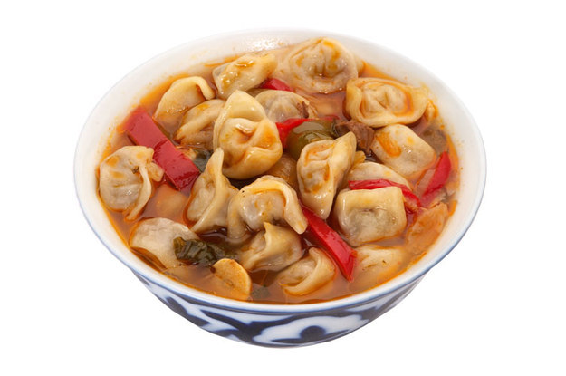A soup in which small dumplings are boiled in salt water or bouillon and served with sour milk suzma and seasoned with pepper, onion, tomato paste, black pepper, and sour cream
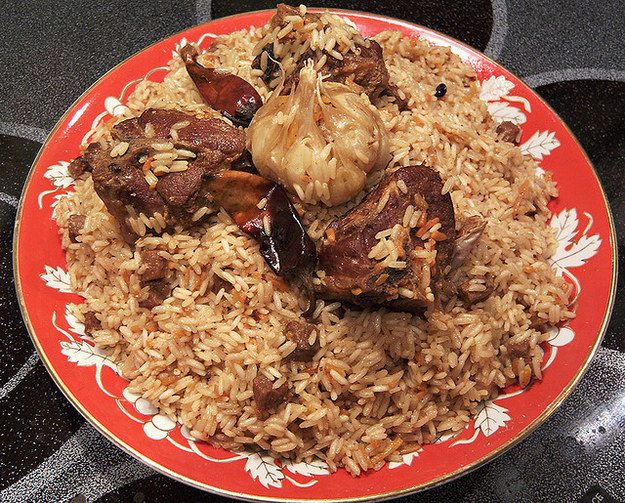A delightful mixture of rice, bits of meat, grated carrots and onions, and raisins (with a clove of roasted garlic on top). The “wedding” part refers to the fact that it’s easy to cook in large quantities (traditionally in a kazan over an open fire) and is often served on special occasions, like weddings.
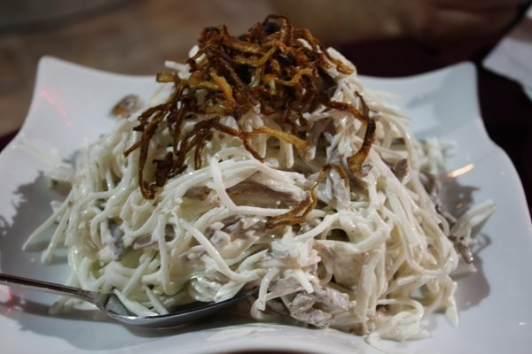Named after the capital, this trademark salad is made from boiled beef tongue, radishes, and fresh greens generously coated in a special yogurt dressing and topped with crispy fried onions.

Steamed dumplings sprinkled with dill and served with sour cream. Meat, spices, or vegetables can make up the stuffing, so you never know what you’re going to get!
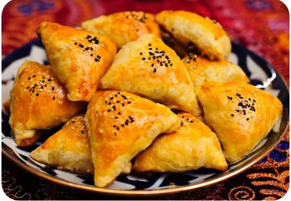A triangular dough pastry that’s baked in a tandoor oven so that the bread is somehow both crunchy and super-soft. Like manty, they can be filled with a variety of things, including ground lamb, herbs, and, the most interesting traditional option, pumpkin.
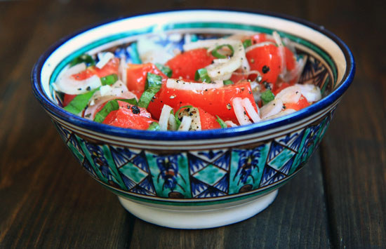Uzbek cuisine dont offer much for the diehard vegetarian, but this dish made up of thinly sliced tomatoes and onions seasoned with spices offers a light, healthy, but still flavorful option.
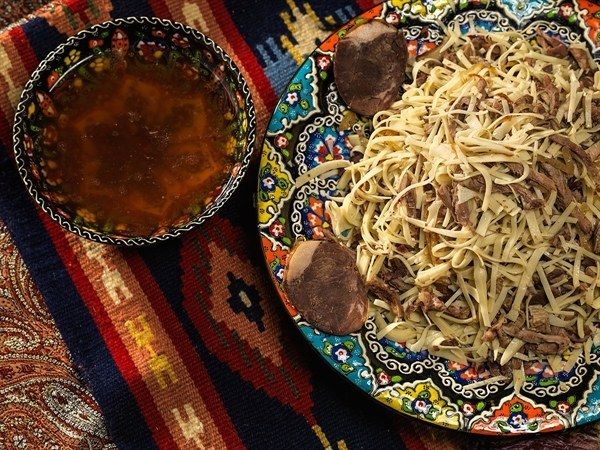An oriental merchant favorite, the dish is composed of hand-spun noodles and boiled jerk meat, served with minced onions and black pepper. Traditionally, it is made with horse-meat.
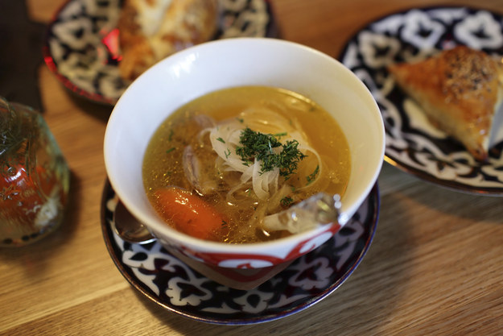A soup made out of fatty meat (usually mutton) and fresh garden vegetables like tomato, carrot, and slices onions. There are two version: Kaytnama (made from fresh meat) and Kovurma (made from fried meat).
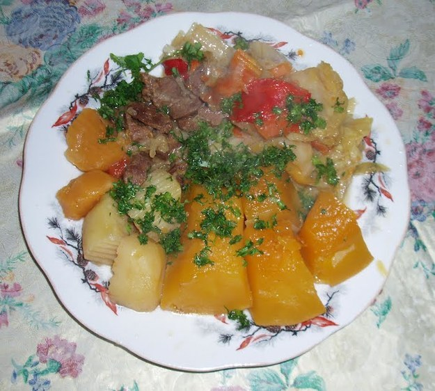A hearty stew made of meat, potatoes, onions, vegetables and sometimes fruit. And of course spices. And dill. Always dill.
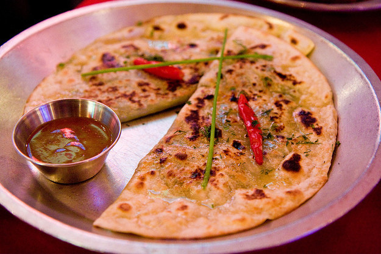Uzbek cuisine is famous for its fluffy flatbread, and these are deep-fried and served with either meat or vegetables inside.

Chunks of lamb, chicken, or lyulya (a mix of mutton and spices) served on steel skewers and topped with more slices of raw onion than you ever thought you’d encounter. It’s often served with Adjika- a bright red, spicy sauce made from hot red peppers.
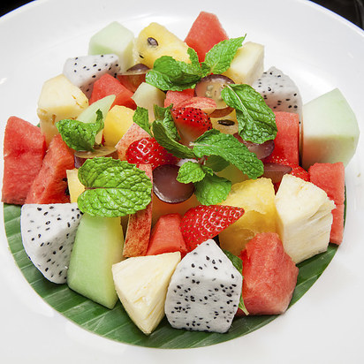 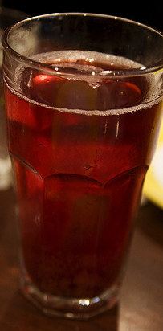Not technically a 'dish' but you’ll find that patrons of Uzbek restaurants typically end their meal with a platter of 'exotic fruit' (usually slices of watermelon, cantaloupe, pineapple, and grapes), or 'compote' (a juice made from fresh or dried fruit).
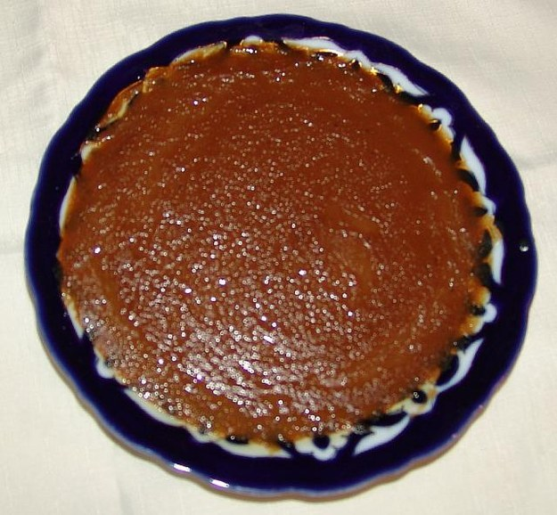There arent many national desserts to choose from, but if you have a sweet tooth you can also try this Uzbek version of halvah, a flour-based confection which has a creamy nut flavor.
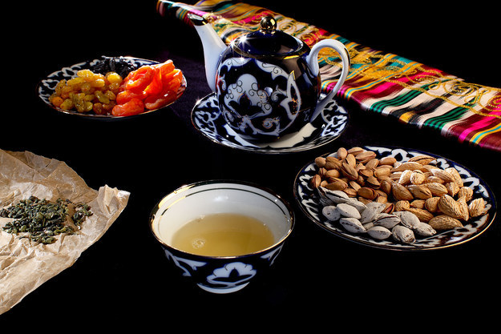It’s imperative to try Uzbek tea, which comes in a wide assortment of green, black, and herbal varieties, and is served with ceremonious care. You can also try a Bukharian Jew specialty called Chai Kaymoki - green tea mixed with milk and butter and sprinkled with almonds.